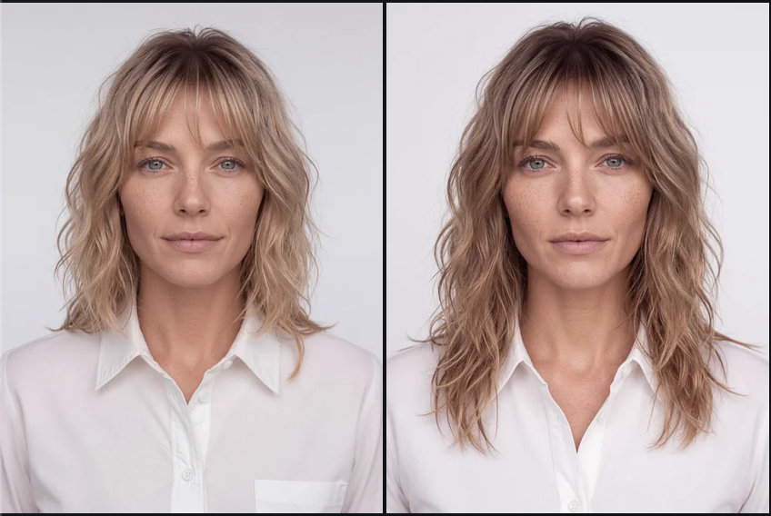
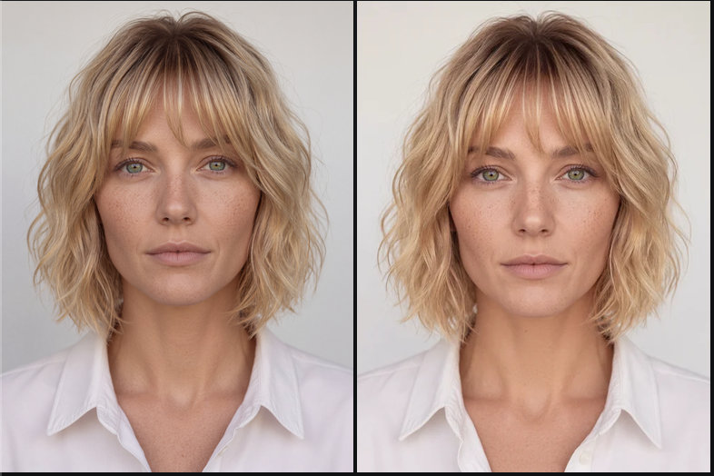
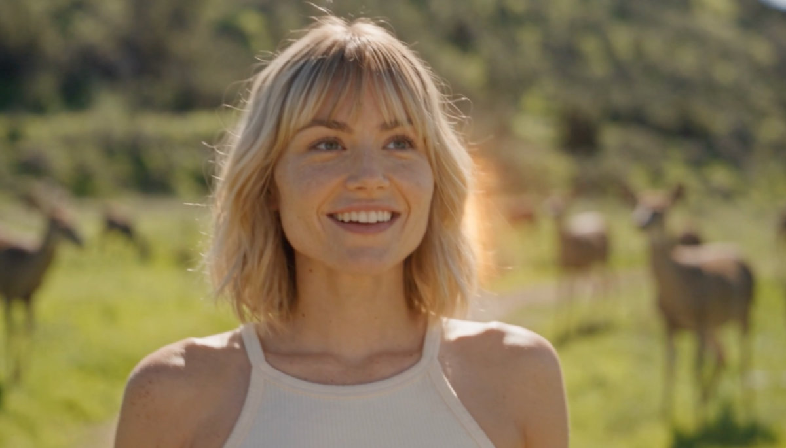

File A / Ava Pearson
The discovery path.
A strong unplanned image, refined into a repeatable creator.
AI Influencer Build Lab · Founding Edition
A practical, one-time course: plan a character, keep the face consistent, and turn images into publishable video.
Real prompts, exact settings, and two documented AI case studies — including what went wrong.
BUILD is available now. GROW and MONETIZE come later, once tested. No date is promised.
For digital solopreneurs and self-employed professionals. Tool accounts and credits are separate.


Tools and tutorials pile up, but the next image looks like a different person.
Clips look “AI”: no consistent face, no camera intention, no brief.
Monetization advice arrives before you have anything an audience could recognize.
You leave with a planned character, a Soul ID, images you meant to make, and video you can direct. Tool accounts and credits are separate.
Purpose, audience, and look, written down before you generate.
The same face, across scenes, styles, and camera angles.
Choose the model, write the prompt, and fix the usual “this looks AI” problems.
Camera movement, genre, and cuts that serve the story.
Prompt, settings, result, and the one change you test next.
Ava Pearson and Ethan Cole are AI-generated hosts and documented production case studies — not customer testimonials, and not a promise of income or reach.
A strong unplanned image, refined into a repeatable creator.
Concept and personality first, then the face.
The course begins with the person Ethan should feel like — then uses the first image to test identity, not to chase a perfect scene.
Calm confidence, intelligence and authority — without arrogance or hype.
Study attributes such as presence and clarity; combine them into a new character rather than copying one reference.
Check whether the reference image feels like Ethan. Background and lighting can be refined afterwards.
A worked video example in the course, Ava Walks Through the Worlds, keeps the prompt, the settings, and what actually drifted.
Click through the decisions behind the work. No magic prompt. No skipped steps.
Define the purpose, audience, positioning and voice. A creator brief gives every later image a reason to exist.
In the course: Plan Your Creator + Your Creator Brief.
A real lesson: hold one character’s identity while the setting, camera and movement change. The still and the prompt below are from the original 30-second course example.

“The camera starts as a wide shot, then follows her at walking pace for the rest of the film. Cuts only happen at a clear facial expression or an important action.”
Start image as Image 1 + @Ava Soul ID. Seedance 2.5. 30 seconds, 16:9, 720p, sound on. Settings from the course example — not a claim about current provider pricing.
Start from @Image 1. @Ava in the image is the only character; keep her face, golden blonde bob with full bangs, cream halter top, black jeans and sage-green sneakers consistent in every shot. The camera starts as a wide shot, then follows her at walking pace for the rest of the film. Cuts only happen at a clear facial expression or an important action. Cinematic, photorealistic, natural motion, no text. Every portal looks exactly the same: a doorway-sized ring of glowing orange sparks, sparks flying off its edge, and through it the next world is already visible, like looking through a window. She always walks through the portal. 0-5s: @Ava types on her laptop in the loft studio. Behind her, on the empty floor area at the right of the frame, the first portal opens, and a sunlit green valley is visible inside it. She notices the glow, turns toward it, and steps through. 5-10s: She walks through the green valley with deer and birds. Close-up of her face: amazed and delighted. Ahead of her, a new portal opens, and through it a battlefield with explosions is visible. 10-15s: She steps through into the battlefield. An explosion sends debris over her head and she ducks. Cut to her startled face. A new portal opens ahead, and through it a huge dragon flies over a fantasy castle. 15-20s: She steps into the fantasy landscape. The dragon flies low overhead. Cut to her face looking up in awe. A new portal opens ahead, and through it a black-and-white world is visible. 20-24s: She steps into the black-and-white world and is the only thing in color, curious and playful. A last portal opens ahead, and through it a quiet beach at golden hour is visible. 24-30s: She steps out onto the beach and walks to the water’s edge. She sits down in the sand and looks out over the sea with a content smile. The camera settles slowly beside her. End on a calm, still image.
A prompt is an instruction, not a guarantee that every detail will be followed. The lesson includes the generated result and the next test.
Modules 1–3 start free. The Founding Edition unlocks module 4 onward. Follow the prompts, controls and practical decisions — including the attempts that needed another pass.
What you get, what is available today, and what sits outside the course.
Paid BUILD from module 4 onward, plus later modules added to this course. Modules 1–3 also start free.
BUILD. GROW and MONETIZE are not live yet, and no date is promised.
No. You build an AI-generated creator and label it as AI.
Yes for the source workflows (images, video, Soul ID). Tool costs are separate and can change; check the provider before you subscribe. ElevenLabs is optional for a designed voice.
No voluntary refund is offered. If access is broken, email team@aiqbiz.com. Mandatory legal rights still apply.
Puranutris LLC, a Wyoming limited liability company. Contact: team@aiqbiz.com. The course is offered to business customers.
$97 one-time, or start modules 1–3 free. This is an educational course. No earnings claims.
The first 300 founding members are tracked manually. There is no public counter and no timer. The price may rise later; existing access stays.
$97USD · one payment · no expiry on this course
Preview only — buttons on this file do not take payment. Ava and Ethan are AI-generated case-study hosts, not customer proof.